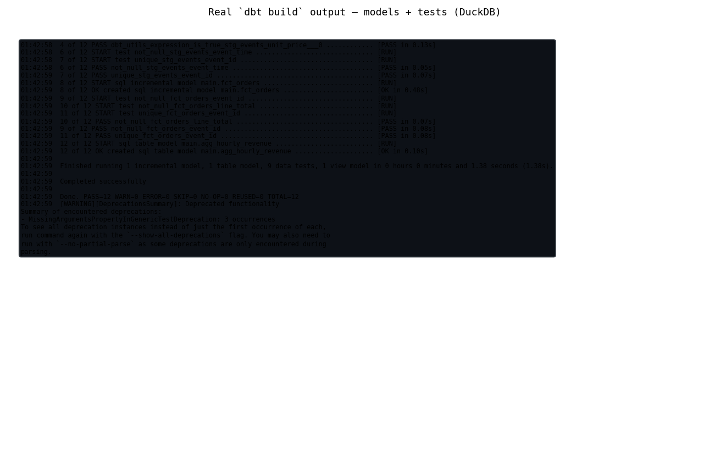

Streaming · Fraud detection · ML
Real-Time Retail Intelligence — Kafka, Spark & ML Platform
Streaming analytics over synthetic retail events: Spark Structured Streaming into Delta Lake, with fraud-velocity alerting, anomaly scoring and demand forecasting.
- Problem
- Spot fraud and forecast demand on fast-moving retail events — without late or bad data corrupting the results.
- Architecture
- Order events → Kafka → Spark Structured Streaming (bronze → silver → gold, 10-minute watermark, checkpointing and deduplication design for exactly-once processing) → Delta Lake + alerts topic. ML models run as a batch sidecar, not inside the stream.
- Implementation
run.shorchestrates the pipeline. Deterministic velocity guardrails run inline in the streaming job for near-real-time fraud alerts; IsolationForest and GradientBoosting models train and score in batch, writing flags toanomaly_scores.csv; dbt models and tests run on the gold layer.
- 80,628 synthetic streaming events processed
- 100% recall on injected fraud scenarios
- 3.02% overall alert rate
- 83.4% lower forecast MAE than the naïve baseline
- 24/24 checks green — CI-tested file-replay path (12 dbt + 12 pytest)

Limitations: all data is synthetic. The Kafka path needs Docker and was not executed in this environment — CI tests the file-replay path, which runs the same transforms.
View Repository